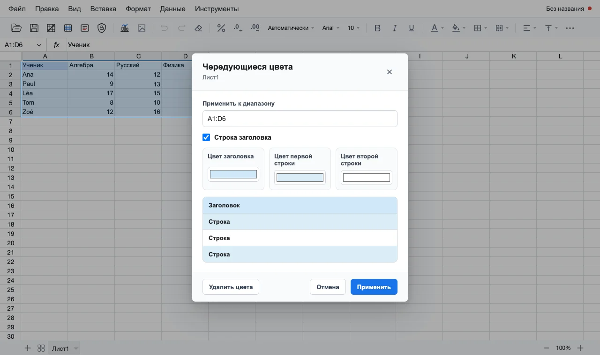

Оформление
Текст
| Команда | Где |
|---|---|
| полужирный, курсив, подчёркнутый | ; Ctrl B, Ctrl I, Ctrl U |
| шрифт | список Arial: тринадцать шрифтов |
| размер | список 10 или Формат › Размер шрифта: от 9 до 72 |
| цвет текста, цвет фона | |
| очистить оформление | , Формат › Очистить формат |
В палитре цвета Сбросить цвет убирает его; ПОЛЬЗОВАТЕЛЬСКИЙ открывает выбор цвета системы.
При изменении ячейки оформление применяется к выделенной части текста.
Выравнивание
| Команда | Варианты |
|---|---|
| по горизонтали | слева, по центру, справа |
| по вертикали | сверху, посередине, снизу |
| поворот | наклон, вертикально, столбиком |
| перенос | Переполнение: на пустые соседние ячейки; Перенос: на несколько строк; Обрезка: обрезано по границе |
Если выравнивание не выбрано, числа и даты стоят справа, остальное слева.
Границы
рисует выбранную границу; стрелка даёт стороны (верхняя, внешняя, внутренние, все, нет, диагональ), цвет и стиль линии. Цвет и стиль выбирают до стороны.
Объединение
или Формат › Объединить ячейки:
| Команда | Результат |
|---|---|
| Объединить все | одна ячейка, в которой остаётся одно содержимое |
| Объединить вертикально | одна ячейка на столбец |
| Объединить горизонтально | одна ячейка на строку |
| Разъединить | возвращает ячейки |
Диапазон с объединёнными ячейками нельзя сортировать или фильтровать.
Чередующиеся цвета
или Формат › Чередующиеся цвета... окрашивает каждую вторую строку выделенного диапазона, при желании со строкой заголовка. Три цвета можно выбрать.

Это обычные цвета фона: они не следуют сортировке или вставленной строке. Удалить цвета убирает их из диапазона.
Сетка
или Вид › Показать › Сетка скрывает или показывает серые линии на всех листах книги. У печати своя настройка.
О цвете, зависящем от значения, см. Условное форматирование.